The Injury, Illness or Exposure module allows users to chart work and non-work related injuries, illnesses and exposures (incidents) in a streamlined and efficient process. The Injury, Illness or Exposure Progress Note (IIE Progress Note) form uses what we call, “Smart Questions and Menus”; which means that when you answer certain questions, the form displays all the corresponding questions and hides the non-related questions. This makes the form easier and faster to complete.
Examples of incidents that can be charted using the Injury, Illness or Exposure Module:
The Injury, Illness or Exposure module has three types of outputs:
Scenario: Patient care technician Ken Smith was walking from the parking lot and slipped and fell hurting his left knee. Later during his shift, Ken’s manager notices that he is being less active than normal and guarding his injury. The manager inquires what is wrong and what happened.
A): Ken’s manager asks him to log into ReadySet and fill out the Employee Incident Survey.
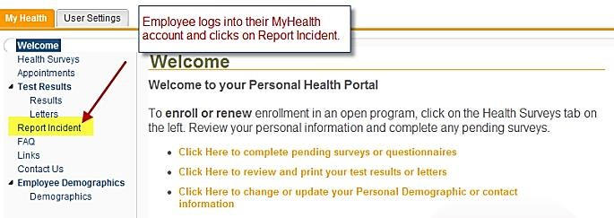
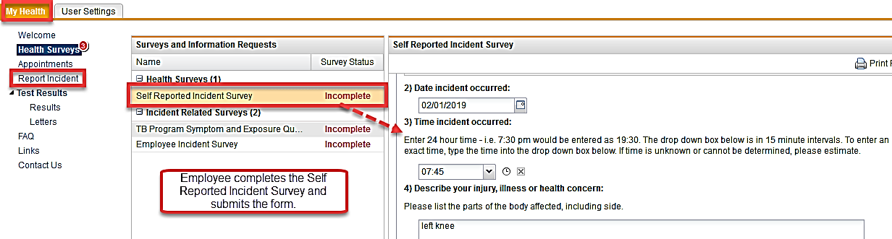
B): The manager sends Ken to the EHS department immediately after completing the incident survey in his My Health account. Meanwhile, the EHS provider/clinician sees that the Alerts button is displaying a Critical Alert. The red number is an indication that a worker has submitted an Incident Survey. The Critical Alert screen will also display the participant’s location from their demographic record.
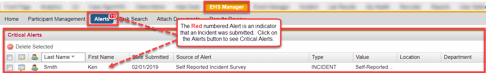
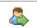
for Ken Smith and reviews the completed survey.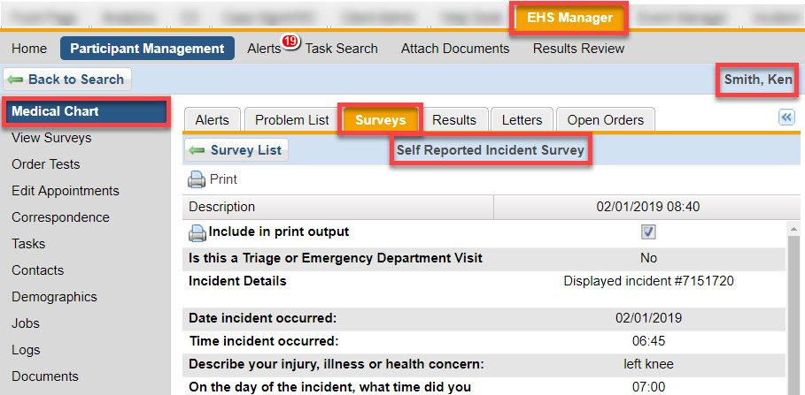
C): Ken goes to the EHS clinic and the EHS provider/clinician orders the charting form; Injury, Illness or Exposure Progress Note through Order Tests for that employee.
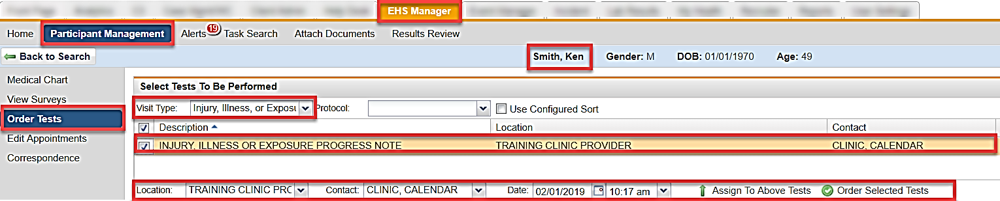
D): Ken is taken to an examination room and seen by the EHS provider/clinician, who reviews the Self-Reported Incident Survey with Ken.
E): The EHS provider/clinician documents in the IIE Progress Note located in the Medical Chart under Open Orders. This screen allows the provider/clinician to view both, the Employee’s Incident Survey and the IIE Progress Note at the same time.
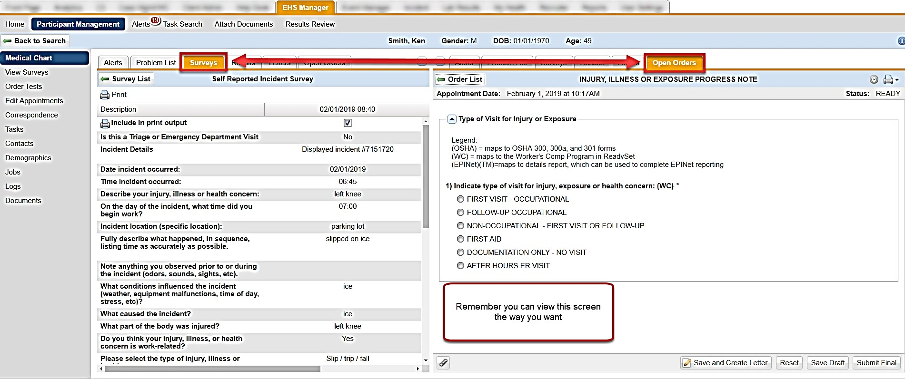
Treatment, chart and collect administrative information related to an initial incident using this form. This form collects all data for real–time OSHA recording and also displays in the Workers’ Compensation Case Management module (purchased separately). You can also generate a Work Status letter from this IIE Progress Note. There are two distinct sections that allow you to manage the questions that are displayed. Question 1 is the first question that you use to choose the path that you want to follow. For example, if the employee only needs first aid, then you would select First Aid on question 1. This will open the First Aid and Follow-Up sections, as the rest of the form is not needed.
The legend at the top of the IIE Progress Note explains that All OSHA reporting questions have a (OSHA) notation next to those questions. Any questions connected to ReadySet’s Worker’s Comp Program have a (WC) notation. (EPINet™) noted questions map to the detail report, which can be used to complete EPINet™ reporting.
A): The EHS provider/clinician will identify this as the first visit by selecting "First Visit - Occupational".
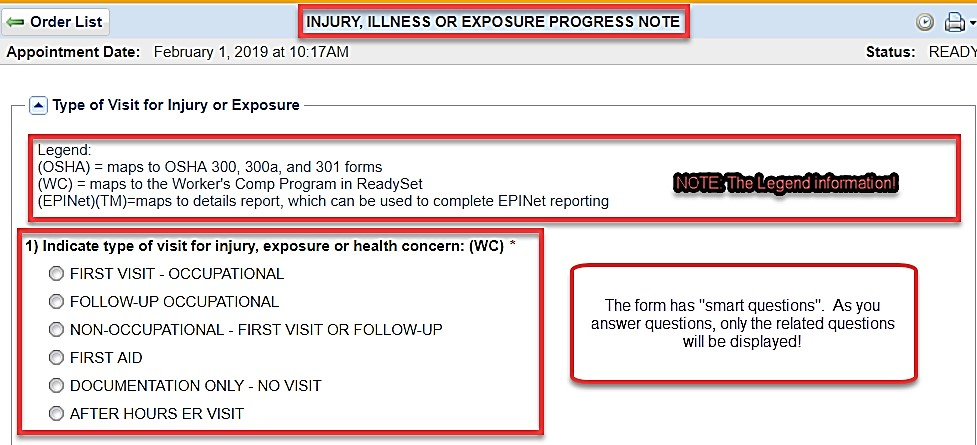
B): General Information
Questions 1-7 are needed to connect all the pieces of the picture. This group collects the minimum information about the incident required for identifying the incident in other parts of our system and for reporting purposes.
The information entered in these fields will populate any follow-up visits when using the Import Answers option. This option is shown in Example 2.
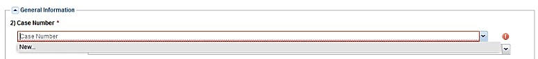
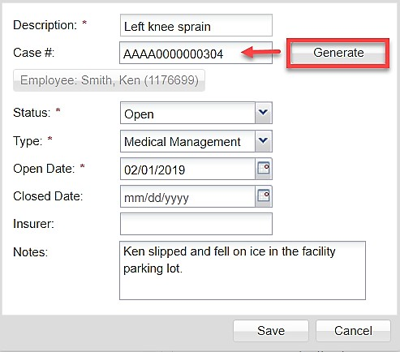
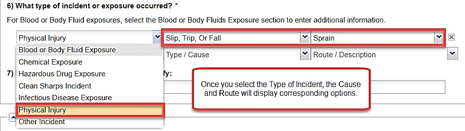
C): Information to be Completed
The IIE form is a universal form for use in all types of incident scenarios. You select the sections that you need for charting this appointment:
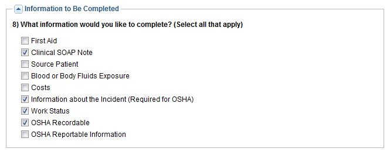
Following our example above, we will open and enter data in these sections.
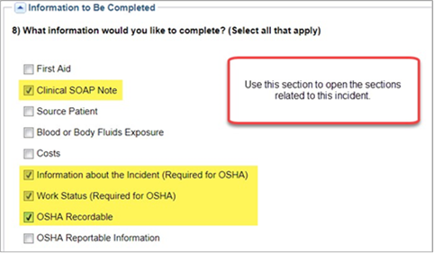
D): Clinical SOAP Note
Use this section to enter the Subjective, Objective, Assessment and Treatment Plan information related to the incident at this current time. The charting portion is used for taking care of the employee.
The Part of the Body is for indicating the body region. For EPINet Injury Location use the Blood or Body Fluid exposure section.
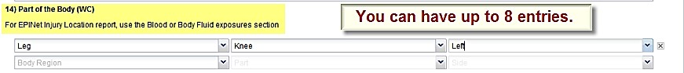
E): Information about the Incident
This section collects administrative information about the incident and will populate the OSHA Reports and the Workers' Comp/Case Management Program. Questions concerning Location/Facility and Department have drop downs that display your information sent to us through your Data Feed.
F): Work Status
The Work Status section collects information concerning the person’s work status, days lost, job restrictions or transfers. You can also create a Work Status letter to print or email that auto populates based on the information completed in this section.
ReadySetprovides a calculator that can assist you with calculating the number of days between two dates. You may use the number to record the total OSHA-recordable Lost and Restricted Days questions.
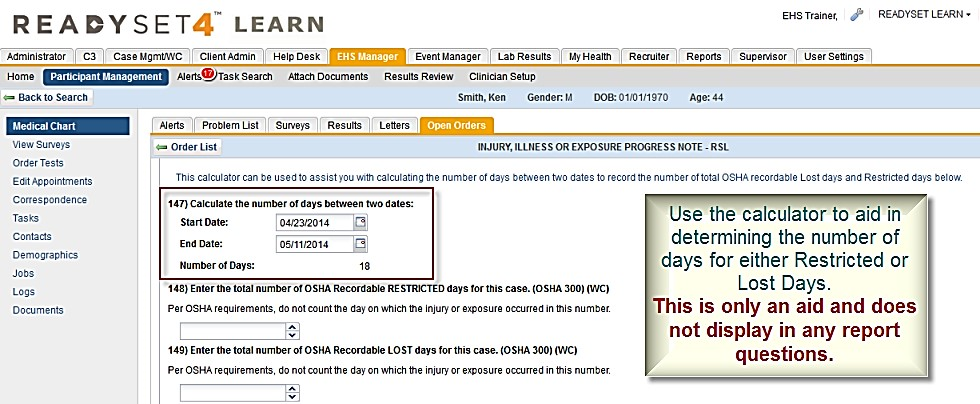
G): OSHA Recordable
This section contains questions and information to complete the recordable portion of the OSHA reports; including:
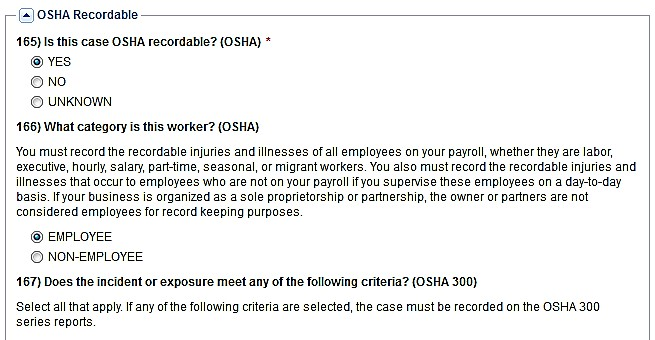
For the question “What is the OSHA classification of this case?", this item is recorded in the OSHA 300 Description field. Enter the most serious outcome or injury resulting from this case. This could change during the course of this case, so be sure to keep this field updated.
This section contains questions for the types of follow-up and final provider signature.
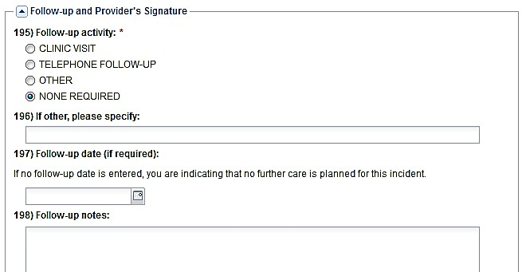
Upon completion of the IIE Progress Note, you can Save and Create Letter, Reset, Save Draft and Submit Final.
The Submit Final option allows any OSHA data documented to display on the OSHA reports if OSHA Recordable is checked.
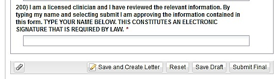
Continuing with our example, let’s go through the process of creating a Work Status letter from the IIE Progress Note. The Work Status Letter uses the information entered in the Work Status section of the IIE Progress Note. This letter can be printed or emailed.
EHS Provider determines that Ken can remain at work but will have some job restrictions for the next week. Using the Work Status portion of the IIE Progress Note, the provider enters the information for the work restrictions and the time period. When finished with the IIE Progress Note click Save and Create Letter to complete, print or email a Work Status Letter.
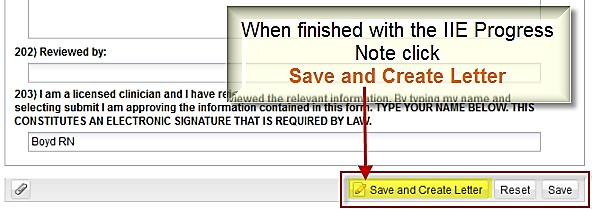
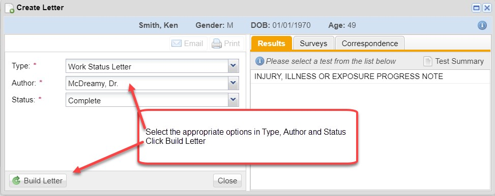
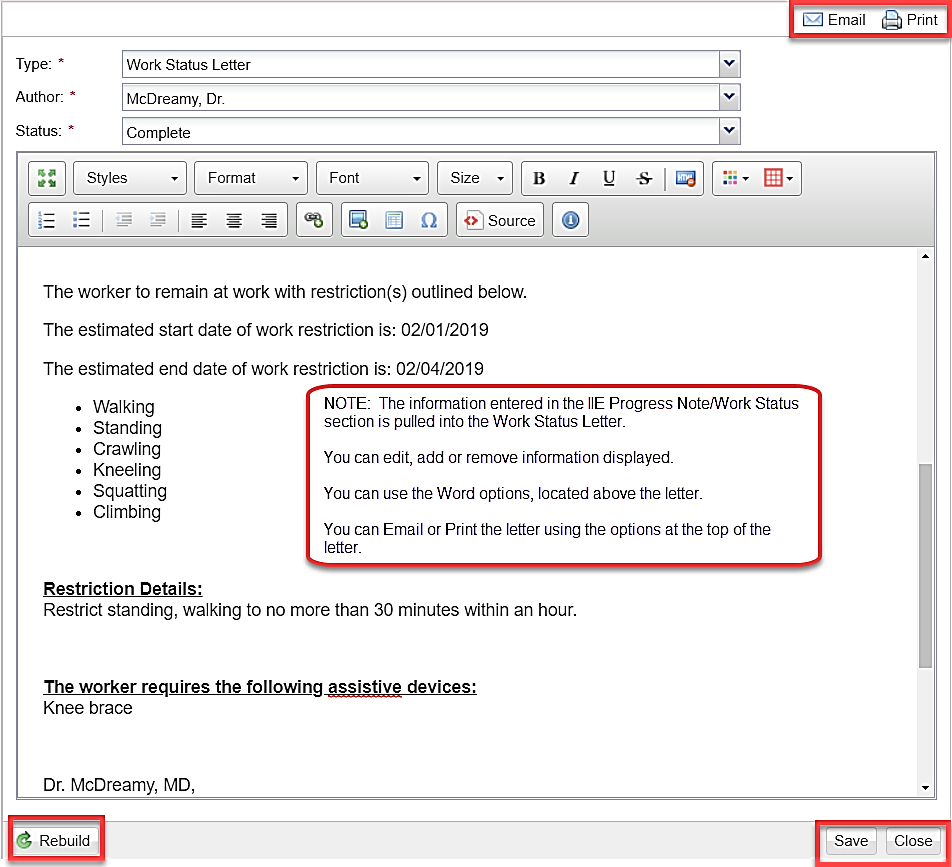
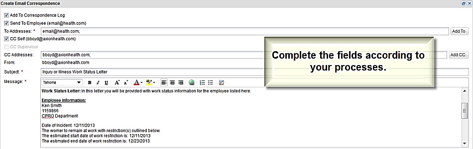
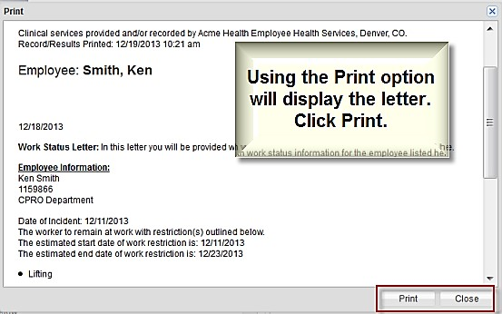
There are instances that you will have multiple visits for an incident. You will open a new IIE Progress Note for each of those appointments. But now you can easily bind these visits together via the Case Number. You now have the ability to auto-populate information from a previous related IIE Progress Note(s). Using the Import Answers From option will make charting any follow-up appointments for the injury or incident a faster process. See the chart below to understand what and why answers will or won’t import. The only exception to the chart below is the Work Status section. There are portions of the Work Status section that import forward.
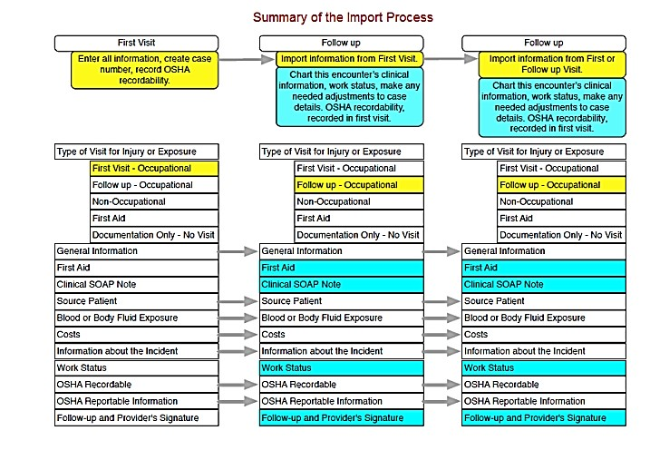
We will also include the Blood or Body Fluid section (BBF) in this next example to show how it is used to document the specific information related to a blood or body fluid exposure. This includes clean or contaminated needle sticks, bodily fluid splashes and spills. The BBF section also has “Smart questions” built in, allowing you to more efficiently fill out the all the needed questions while those not related are hidden.
Scenario: Lab tech, George Jetson, was cleaning up the materials used for a blood draw and when picking up the used needle he received a stick to his left thumb. In example 2, we will start with the follow-up visit for George Jetson.
1): The EHS provider/clinician saw George and charted on the IIE Progress Note the Initial Visit for the needle stick. She also started the blood work on the Source Patient and on George. George arrives for his follow-up visit to discuss the lab results and any further treatment if needed. We will start our example here.
You will always order IIE Progress Note for documenting and then select the correct option on Question 1.
2): The provider/clinician clicks Medical Chart and opens the Open Orders tab. They can also click Results to view both the new charting form and the initial visit.
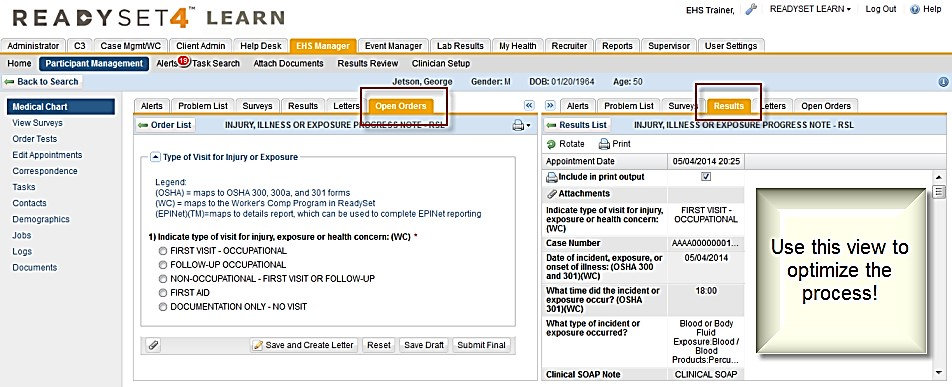
3): Select the "Follow-Up Occupational" in Question 1. This will display the General Information section.
4): Click the drop-down arrow for Case Number. Notice it displays options for New and Open case for the Left Thumb Needle Stick.
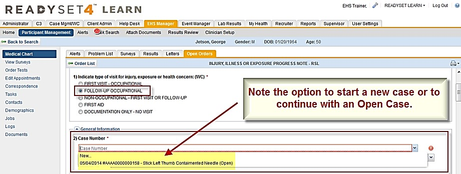
5): When you click an open case in the Case Number field, you will have the option to Import Answers from a previous date.
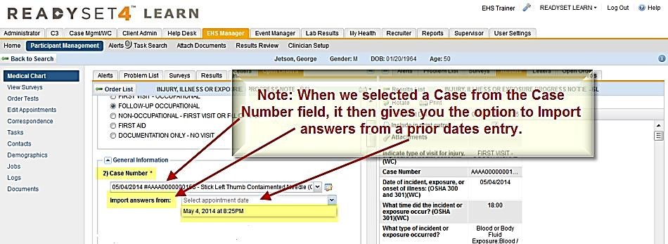
Any information that was charted in the First Aid, SOAP Note and portions of the Work Status sections do not import into the new IIE Progress Note because these sections are concerned with the care of the employee and are not carried forward. If needed for this visit, you would enter in the current care information or work status.
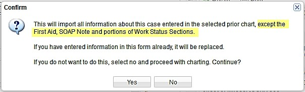
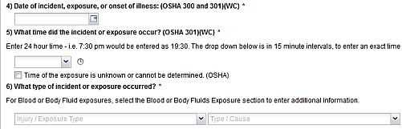
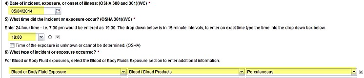
6): The Source Patient information was entered on the initial visit and was noted that the results were pending for Hepatitis B, Hepatitis C and HIV. You can update the results for each of these items.
7): The sections available in the BBF form are listed below. These sections each contain “Smart Questions” that open related fields and hide unrelated fields.
8): Complete the form using the sections that correspond with the incident.
| Section Header | Definition |
| Blood or Body Fluid Exposure | This group will let you select the type of exposure, needle stick/sharp object or Non-Sharp. |
| Needlestick & Sharp Object Injury with or without Blood or Body Fluid Exposure | This group displays if you selected Needlestick & Sharp Object Injury. Use this group to fill out information specifically related to a Needlestick or sharps exposure. |
| Needle-Hollow-Bore | If you selected "needle-hollow-bore" in the Needlestick group above, this group will appear. Use to record the type of needle involved in the incident. |
| Surgical Instrument or Other Sharp Item | If you selected "surgical instrument or other sharp item" in the Needlestick group above, this group will appear. Use to record information related to the type of surgical or sharp device involved in the incident. |
| Glass | If you selected "glass" in the Needlestick group above, this group will appear. Use to record information related to the type of glass involved in the incident. |
| Non-Sharps Blood or Body Fluid Exposure | This group displays if you selected Non-Sharp option. Use this group to fill out information specifically related to non-sharp exposures. |
| Hepatitis B Exposure | Use this group to fill out information related to the employee if they had a possible or confirmed Hepatitis B exposure. This includes your clinical recommendations for proceeding with treatment. You will not fill out lab information in this group; instead you would order or view the separate Hepatitis B lab forms. |
| Hepatitis C Exposure | Use this group to fill out information related to the employee if they had a possible or confirmed Hepatitis C exposure. This includes your clinical recommendations for proceeding with treatment. You will not fill out lab information in this group; instead you would order or view the separate Hepatitis C lab forms. |
| HIV Exposure | Use this group to fill out information related to the employee if they had a possible or confirmed HIV exposure. This includes your clinical recommendations for proceeding with treatment. You will not fill out lab information in this group; instead you would order or view the separate HIV lab forms. |
| Device Information | Use this group to record manufacturer/brand information related to the device involved in the incident. |
The Reports tab can be found after logging in with your EHS Manager username. When running the OSHA reports, it will require the Establishment and the Incident Year and Sort By in the Selection Criteria. See below the Expand/Collapse feature within the Reports tab.
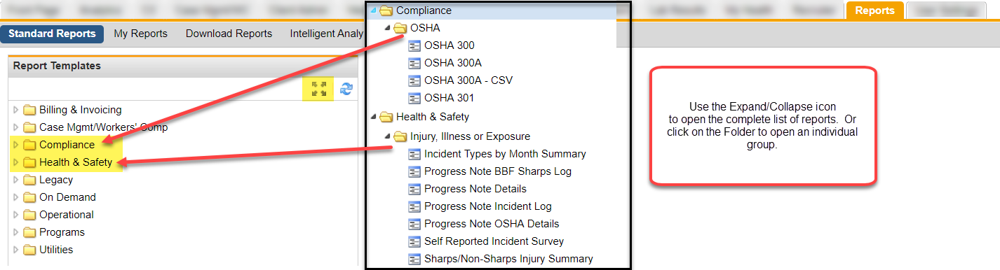
| Reports - Compliance Folder | Description | |
| Injury, Illness or Exposure | ||
| Employee Incident Survey |
All data from Employee Incident Surveys Analyze data and create custom reports Report is in Excel format |
|
| Progress Note BBF Exposure Log |
All non-sharps BBF exposures with relevant information related to what happened and why Analyze data to see trends, report and develop system changes to prevent future exposures Report is in Excel format |
|
| Progress Note BBF Sharps Log |
Reports any sharps and/or types of needles injury from either Blood & Body Fluids and Clean Sharps forms Recommended by OSHA but not required Can be used to educate staff based on information from this report Report is in Excel format |
|
| Progress Note Details |
All data from I&I Progress Note Analyze data and create custom reports Report is in Excel format |
|
| Progress Note Incident Log |
Report on types of incidents, injury, Work Status, OSHA Recordable, OSHA Reportable Analyze data to see trends, report out and develop system changes to prevent future incidents Report is in Excel format |
|
| Progress Note OSHA Details |
All OSHA questions in Excel format Ability to research all OSHA data entered Ability to provide OSHA information to others in a usable Excel format |
|
| OSHA Folder | ||
| OSHA 300 |
Log of work-related injuries and illness for reporting to OSHA Injury, Illness or Exposure Progress Note questions with the “(OSHA)” indicator is used to populate this report Keep on File Report is in PDF format |
|
| OSHA 300A |
Summary of the recordable incidents in a year, includes totals from the OSHA 300 Must be posted for their employees by March of the following year Injury, Illness or Exposure Progress Note questions with the “(OSHA)” indicator is used to populate this report Company executive must sign and date Keep on File Report is in PDF format |
|
| OSHA 301 |
A Detail Report of a single incident or by Case # Injury, Illness or Exposure Progress Note questions with the “(OSHA)” indicator is used to populate this report May print as a Privacy Case (display of employee information) Report is in PDF format |
|
When running the Injury, Illness or Exposure reports there are several options: